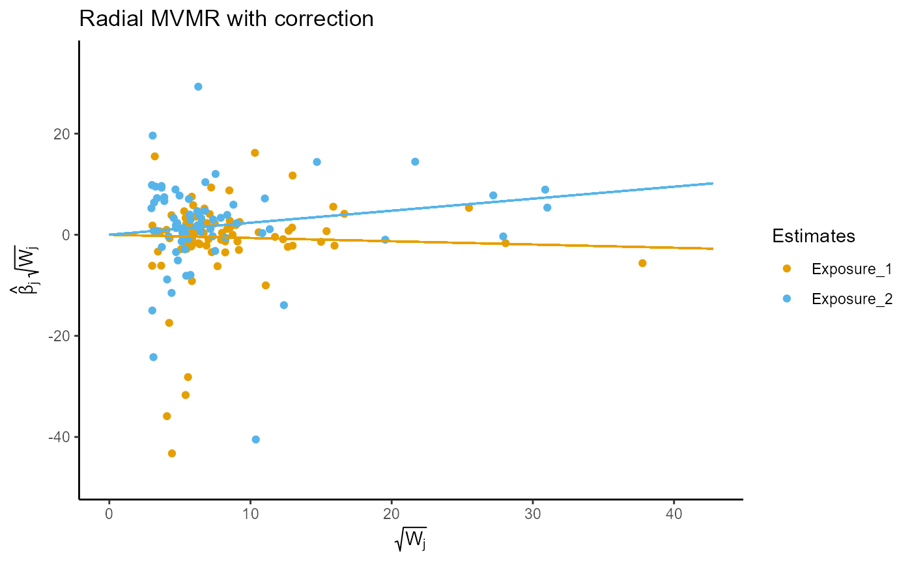

Calculates Q-statistics quantifying instrument strength. Each exposure is treated as an outcome sequentially, fitting the remaining
exposures within a radial MVMR model. High Q-statistics indicate a high instrument strength, comparable to the Q_x statistic in conventional
MVMR analyses. The function outputs a list of plots, global Q-statistics, and individual Q-contributions indexed by the exposure number ordered
using the format_rmvmr function. Named exposures in each list refer to the remaining exposures in the strength RMVMR model.
strength_rmvmr(r_input, gencov)
| r_input | A formatted data frame using the |
|---|---|
| gencov | Calculating heterogeneity statistics using the |
An object of class "S_RMVMR" containing the following components:
plotA list containing plots for RMVMR analyses regressing each exposure sequentially upon remaining exposures in the r_input object. Plots are indexed by the exposure number serving as the outcome for the RMVMR analysis
qstatA list containing global Q-statistics for RMVMR analyses regressing each exposure sequentially upon remaining exposures in the r_input object. Indexing follows that of plots and p-values for global heterogeneity are provided
qallA list containing the individual Q-statistics and data for RMVMR analyses regressing each exposure sequentially upon remaining exposures in the r_input object. Indexing follows that of plots
Spiller, W., et al., Estimating and visualising multivariable Mendelian randomization analyses within a radial framework. Forthcoming.
Wes Spiller; Eleanor Sanderson; Jack Bowden.
f.data <- format_rmvmr( BXGs = rawdat_rmvmr[,c("ldl_beta","hdl_beta","tg_beta")], BYG = rawdat_rmvmr$sbp_beta, seBXGs = rawdat_rmvmr[,c("ldl_se","hdl_se","tg_se")], seBYG = rawdat_rmvmr$sbp_se, RSID = rawdat_rmvmr$snp) output <- strength_rmvmr(f.data)#> Warning: Covariance between effect of genetic variants on each exposure not specified. Fixing covariance at 0.# The following shows the strength plot and Q statistics for exposure 2, # regressing exposure 2 upon exposures 1 and 3 (which are labeled exposure 1 # and exposure 2 based on ordering in the RMVMR model). output$plot[[2]]output$qstat[[2]]#> q_statistic p_value #> Exposure_1 1377.211 6.618994e-230 #> Exposure_2 1057.544 8.171778e-177